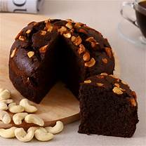
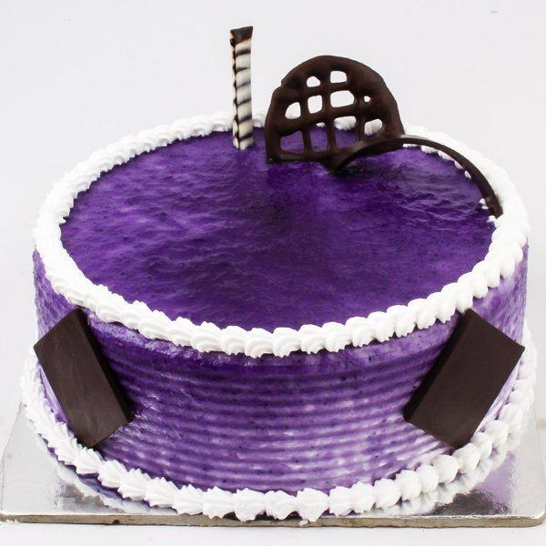

Menu of the Bakery
Cakes in menu
1. Plum Cake
Enjoy the beautiful blend of fluffy cake, cocoa, and your favourite dry fruits or fresh fruits in their best form. Plum cakes are loved by everyone. It is the best choice for a light and healthy dessert after a heavy meal. Plum cakes are traditionally used as a festive cake during special occasions like Christmas, New Year, and thanksgiving.

2. Ferrero Rocher Cake
If you are a Ferrero Rocher lover, then the Ferrero rocher cake is a must-have for you. The yummy nuts infused with chocolatey fun, Ferrero Rocher cake is a delicious dessert to savour at a birthday party or any other occasion. Find the most delicious Ferrero Rocher cakes and treat yourself with some yumminess.

3. Kitkat Cake
KitKat is one of the most loved chocolate flavours in India that has come a long way. Check out some of the toothsome KitKat cake that will be a perfect surprise for a KitKat lover. Planning to celebrate your friend’s birthday who loves chocolates, then get this delicious KitKat cake.

4. Mango Cake
Aam ki season is finally here again! This is the time when people look for all the amazing food items made of mangoes. If you are a mango lover, then you must try a toothsome mango cake that is absolutely finger-licking tasty. The magical taste of the mango cake will keep you wanting more of this delicious dessert.

5. Chocolate Cake
Chocolate cakes are universally loved. Everyone has a nostalgic connection with a chocolate cake. You probably would have cut a lot of these yummy cakes on your birthdays, growing up. If you want to relive those beautiful memories, then get yourself a delicious chocolate cake.

6. Brownie Cake
Brownies are loved by everyone, especially kids. Brownies are one of the most famous desserts worldwide and these cakes will definitely leave you wanting more. Want some yummy in your tummy? Then order some delicious brownie cake for yourself now!

7. White Forest Cake
Here is a treat for all the white chocolate lovers, HalfCute’s very famous white forest cake. This luscious cake is made of layers of chocolate cake soaked in cherry-based syrup and is topped with cherries, cream frosting, and white chocolate flakes. You can now enjoy this beautiful cake at your home with your loved ones.

8. Rainbow Cake
Rainbow reminds us of fairy tales and wonderlands. All kids pass a stage where they are absolutely mesmerized by rainbows and they probably think rainbows come out from a treasure box. Give your kids the magical wonderland vibes with the amazing Rainbow cake that is so perfect for themed birthday parties.

9. Chocolate Truffle Cake
Why settle for just a chocolate cake when you can have an additional surprise to the cake. Chocolate truffle cakes have a special sauce called the Ganache, which is a yummy creamy chocolate mixture that is used as an icing for these cakes that makes it absolutely irresistible. If you want your loved ones licking their fingers, not wanting to waste an inch of the cake, then hurry up and grab some chocolate truffle cake.
10. Red Velvet Cake
Red velvet cakes are the most beautiful cakes that catch your eye very effortlessly. Whenever one sees a red velvet cake, they won’t be able to resist the desire to eat some. Well, don’t leave your craving disappointed and make yourself the happiest with the delicious collection of red velvet cakes.

11. Black Currant Cake
The toothsome flavour of black currant is obtained from the finest edible berries in all the major winter lands. Try out the best black currant cakes and surprise your loved ones with a Berrylicious cake. The best part about this delicious cake is the amazing and vibrant colour it holds.

14. Vanilla Cake
Vanilla is a flavour that blends well with every other flavour in the world. A vanilla cake can be served with any choice of dessert, sauces, chocolates, toppings and more. If you are a vanilla lover then you definitely have a sweet tooth. Try the most delicious Vanilla cake with different fusion flavours on them.

15. Strawberry Cake
Strawberry flavour is such a tricky one. It looks very sweet but is kind of a tangy berry flavour. Most kids love strawberry cakes for their beautiful colour of pink. Try tasting a yummy strawberry cake and we are quite sure that it will be the perfect addition to your get together parties.